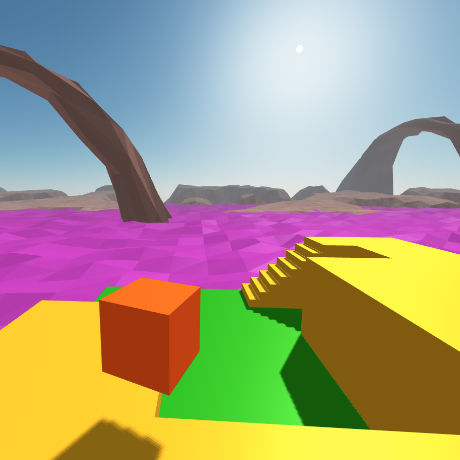
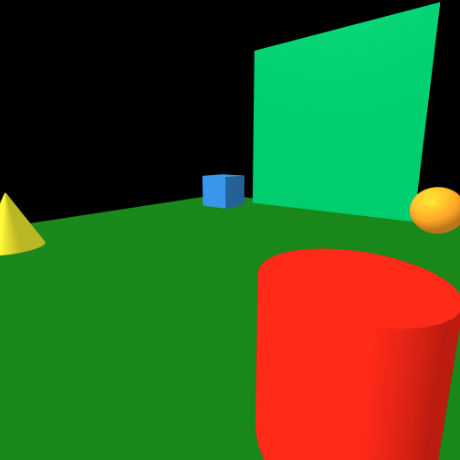

Warning: Experiments Ahead
Experiments and general mucking about page to explore new Web technologies and approaches to process/production. Which basically means that the experience will vary (even break) depending on the browser/device being used and how quickly new specifications are adopted.
The purpose is to learn and to share. So with that in mind - Welcome to our lab! Have fun and please share any thoughts, suggestions or questions with us.
About The Page Header
This is a A-Frame scene depicting the central hub or entrance hall of the Dalek City on Skaro created for the 1963 Doctor Who story "The Daleks". Here we're using an iFrame to investigate the potiential of embedding XR experiences in a webpage. This is not working fully yet. If you encounter difficulties, click on the 'VR Dalek City' button below.
It does take time to load.
Instructions:
Browser: Click on the VR button to enter fullscreen mode and click on the scene to activate mouse look. Navigate using the WASD keys. Press the Esc key to release the cursor. This behaves in the same manner as a FPS game.
Smartphone VR viewer: Click on the symbol in the lower right to enter true VR mode. If the viewer includes a button, use it to move about the scene.
Tracked headset: Use the built in browser to navigate to this page. Click the symbol in the lower right and move around the scene.
Vr
Vr

A-Frame Hello World
Basic A-Frame "Hello World" scene illustrating the ease of implementation. Included is the code to give permission to iOS Safari to share Motion & Orientation data with the scene.
Vr
Vr

Level with Tracked Controllers
Using a HMD and tracked controllers, navigate this simple level using teleport. Level uses 'nav-mesh' detection to indicate accessible areas.
Vr
Vr

VR Maritime Experience
A-frame environment targetting Cardboard VR using geometry imported in the GLTF format, imported A-Frame components, sound and hotspot navigation.
Rough but informative
Vr
Vr

VR Dalek City
Building a interior of the Dalek City from the Doctor Who story "The Daleks"
from 1963.
Currently not working.
Still a WIP.
Ar
Ar

A-Frame Multimarker
Basic A-Frame Multimarker AR scene illustrating the ease of implementation. Three markers are required: the built in Hiro and two custom markers.
Ar
Ar

A-Frame WebXR
A-frame WebXR demo. Works on Android & Chrome and XRViewer on Mac.
Ar
Ar

WebXR Boilerplate
A-frame WebXR boilerplate file. Works on Android & Chrome and XRViewer on Mac.
Ar
Ar
A-Frame AR reticle Click
A-frame AR example using a reticle and 'click' event to affect or activate the artifact when hovering over them.
Ar
Ar
A-Frame AR Mouse Click
A-frame AR example allowing for targeted clicks on objects displayed by the marker.
Vr
Vr
A-Frame VR Stereo Skybox
Simple 360 stereo image using the aframe-stereo-component
Vr
Vr

HMD Teleport Controls
Basic implementation in A-frame to tracked hand controllers for HMD such as WMR/Oculus/Vive. This uses a 'nav-mesh' and teleport to move through the scene.
Vr
Vr

VR HMD Grab
A-Frame.io example. Using any headset that has tracked controllers, it allows you to grab and move the cubes making up the A.